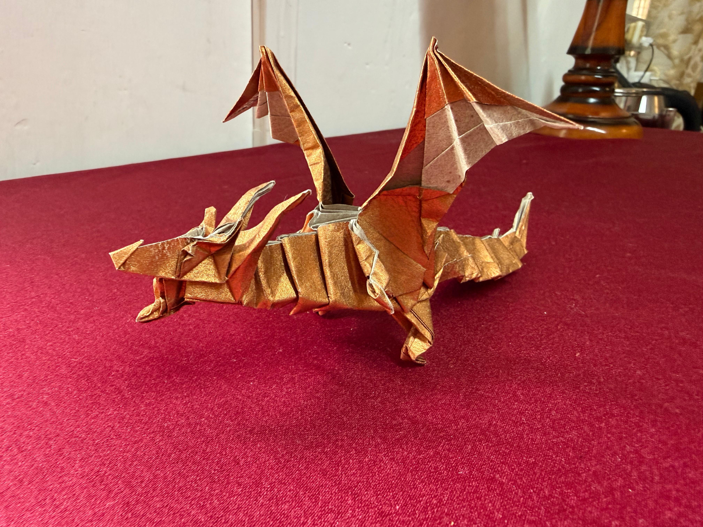
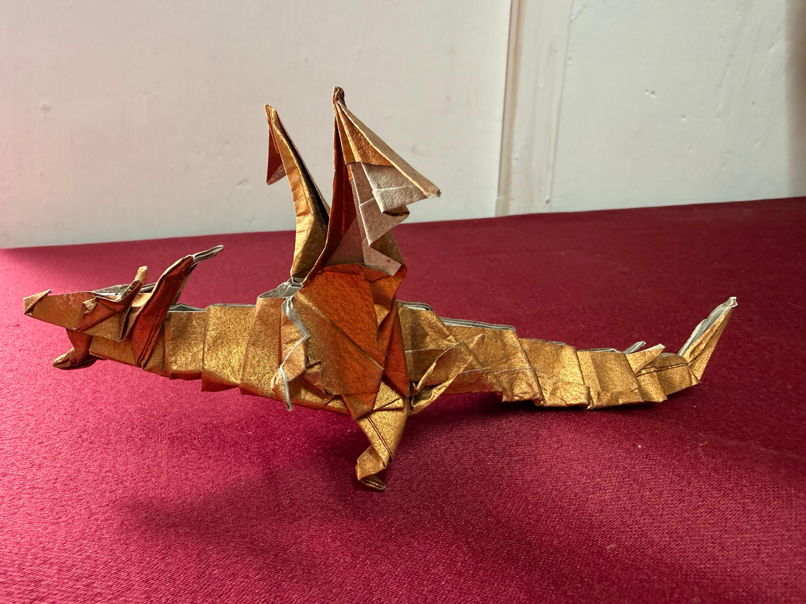
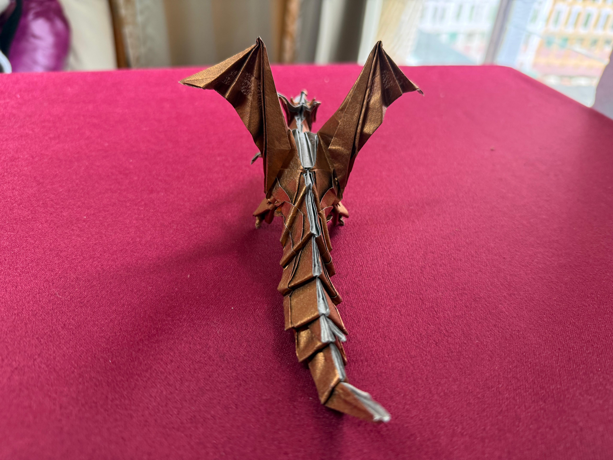
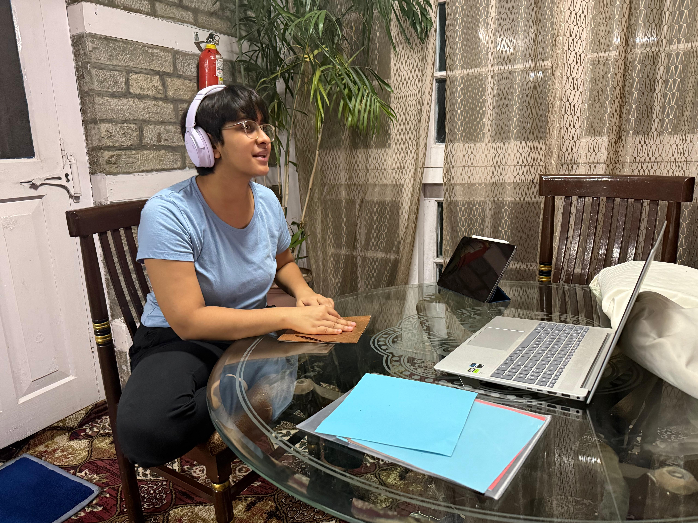
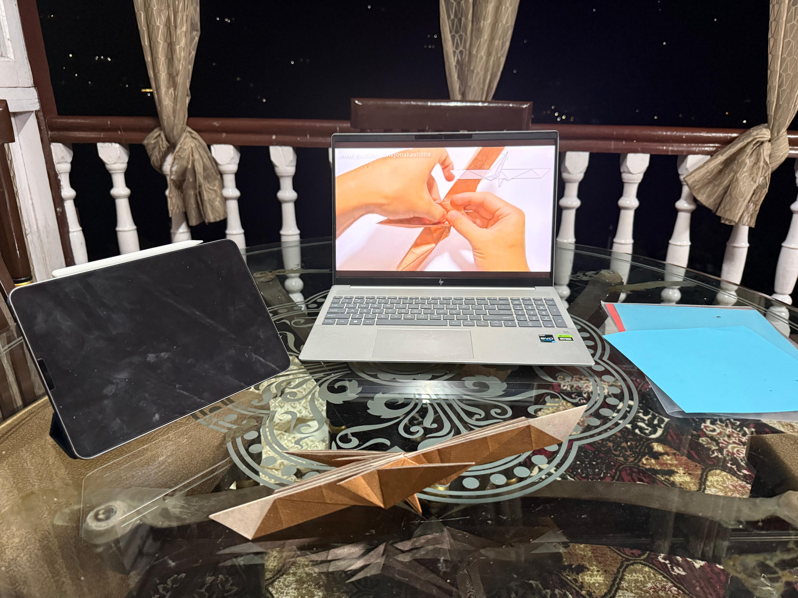

Origami
Fiery Dragon

About This Piece
This is Kade Chan’s Fiery Dragon. I folded this model by following Jo Nakashima’s tutorial, and it was my first time working with tissue foil paper. I used a 30 × 30 cm sheet of gold tissue foil, and I’m really proud of how it turned out.
I folded this while on a family vacation in the mountains, so I got to work with some incredible views in front of me the whole time. Definitely one of my favorite places I’ve ever folded.
Final Dragon


Folding in the Mountains
These were some of the views around me while I was folding.

